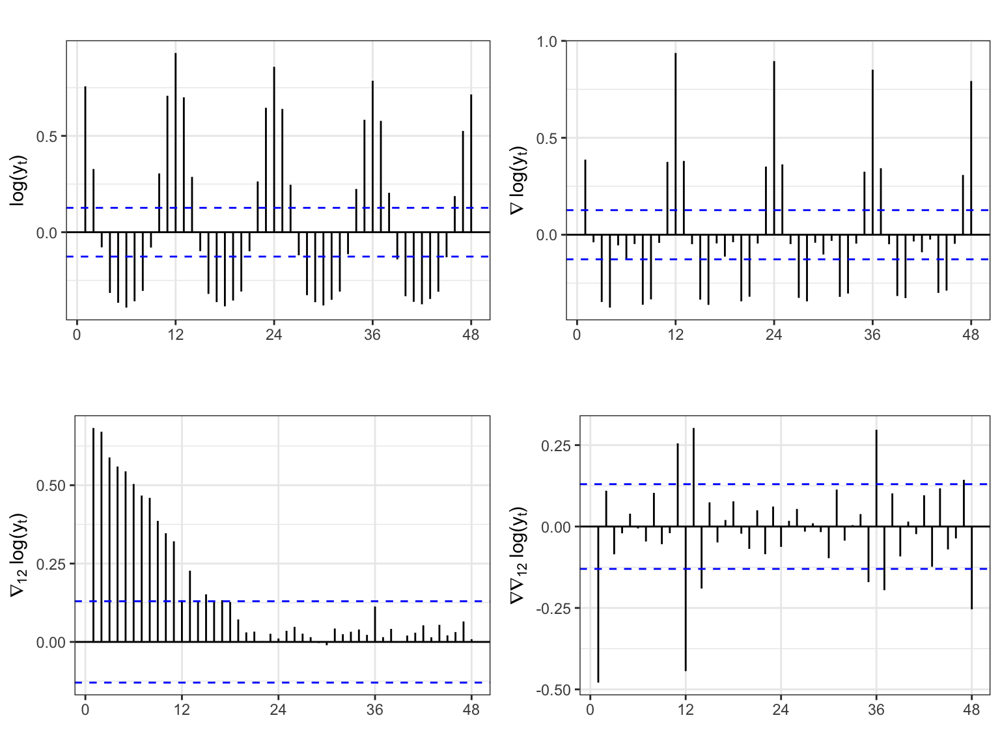
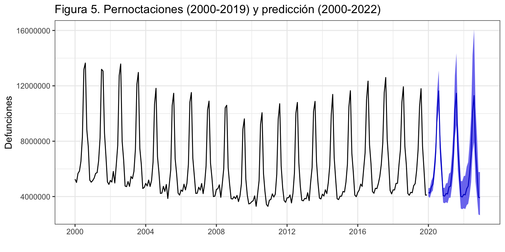
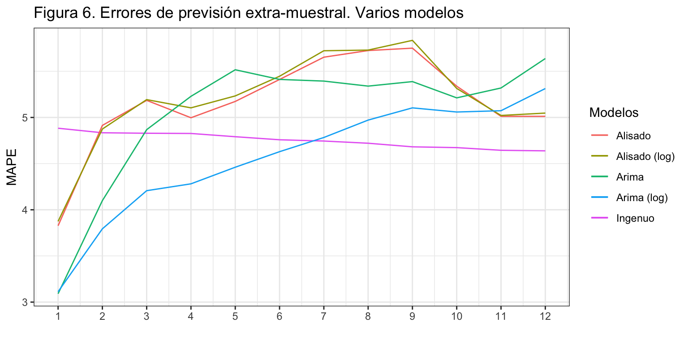

Pernoctaciones en alojamientos turísticos de turistas extranjeros
Procesos ARIMA con estacionalidad
Iván Arribas (Depto. Análisis Económico. Universitat de València)
1 Introducción
Consideremos de nuevo la serie temporal correspondiente al número de pernoctaciones que los turistas extranjeros realizan en España en alojamientos turísticos autorizados (que llamaremos Pernoctaciones en adelante). Esta serie está disponible en Eurostat desde enero de 2000 hasta diciembre de 2019, un total de 20 años y 240 observaciones.
La serie presenta tendencia decreciente hasta finales de la primera década del presente siglo y luego creciente hasta los dos últimos años. La estacionalidad de orden 12 esta determinada por las vacaciones de verano. El esquema es multiplicativo.
Pernoctaciones <- read.csv2("./series/Pernoctaciones.csv", header = TRUE)
Pernoctaciones <- ts(Pernoctaciones[,2], start = 2000, frequency = 12)autoplot(Pernoctaciones/1000000,
xlab = "",
ylab = "Noches (millones)",
main = "Figura 1. Pernoctaciones (datos mensuales)") +
scale_x_continuous(breaks= seq(2000, 2020, 2)) 
2 Identificación
2.1 Diferenciación y logaritmo
El esquema multiplicativo de la serie aconseja el uso de la transformación logarítmica. Además, vamos a ver que para que la serie sea estacionaria, es necesario diferenciarla tanto regular como estacionalmente, así que el uso de logaritmo vuelve a ser aconsejable si queremos ganar en interpretabilidad.
La figura 2 muestra la FAC para la serie Pernoctaciones (log) y algunas de sus transformaciones. En los paneles de la primera fila las autocorrelaciones estacionales decrecen muy lentamente, indicando que la serie analizada no es ergódica (ni estacionaria estacionalmente). El primer panel de la segunda fila muestra que las autocorrelaciones en la parte regular decrecen lentamente, indicando que la serie analizada no es estacionaria. Solo la doble diferenciación regular y estacional de la serie muestra un rápido descenso en los coeficiente de autocorrelación (segundo panel de la segunda fila), indicando que la serie así transformada es estacionaria en media y ergódica.
ggAcf(log(Pernoctaciones), lag = 48)
ggAcf(diff(log(Pernoctaciones)), lag = 48)
ggAcf(diff(log(Pernoctaciones), lag = 12), lag = 48)
ggAcf(diff(diff(log(Pernoctaciones), lag=12)), lag = 48)
Por otro lado, la identificación automática de la diferenciación solo aconseja diferenciar estacionalmente.
ndiffs(log(Pernoctaciones))[1] 0nsdiffs(log(Pernoctaciones))[1] 1Vamos a asumir que el proceso debe ser doblemente diferenciado. Dejaremos para un epígrafe posterior el análisis de procesos alternativos.
2.2 Identificación del orden regular y estacional
Vamos a identificar los valores de \(p\), \(q\), \(P\) y \(Q\). Para ello solicitaremos con auto.arima y seas una identificación automática. Con auto.arima incluiremos dos efectos calendarios, uno para el número de días del mes y otro para el efecto Semana Santa.
Veamos auto.arima
DiasMes <- monthdays(Pernoctaciones)
SemanaSanta <- easter(Pernoctaciones)
auto.arima(Pernoctaciones, d = 1, D = 1,
lambda = 0,
xreg = cbind(DiasMes, SemanaSanta))Series: Pernoctaciones
Regression with ARIMA(2,1,1)(0,1,1)[12] errors
Box Cox transformation: lambda= 0
Coefficients:
ar1 ar2 ma1 sma1 DiasMes SemanaSanta
0.2730 -0.0386 -0.6661 -0.3885 0.0230 0.0508
s.e. 0.1273 0.0878 0.1087 0.0604 0.0126 0.0074
sigma^2 estimated as 0.001497: log likelihood=419.08
AIC=-824.17 AICc=-823.66 BIC=-800.19La función auto.arima identifica un proceso \(ARIMA_{12}(2,1,1)(0,1,1)\), donde los coeficientes para ar2 y para DiasMes no parecen ser significativos (los coeficientes no superan las dos errores estándar). La identificación alcanzada por seas es un proceso \(ARIMA_{12}(1,1,1)(0,1,1)\) de la transformación logarítmica, con una intervención en Semana Santa.
summary(seas(Pernoctaciones))
Call:
seas(x = Pernoctaciones)
Coefficients:
Estimate Std. Error z value Pr(>|z|)
Easter[15] 0.058189 0.007312 7.958 0.00000000000000175 ***
AR-Nonseasonal-01 0.314165 0.121679 2.582 0.00983 **
MA-Nonseasonal-01 0.697317 0.090371 7.716 0.00000000000001199 ***
MA-Seasonal-12 0.374473 0.060259 6.214 0.00000000051539786 ***
---
Signif. codes: 0 '***' 0.001 '**' 0.01 '*' 0.05 '.' 0.1 ' ' 1
SEATS adj. ARIMA: (1 1 1)(0 1 1) Obs.: 240 Transform: log
AICc: 6220, BIC: 6237 QS (no seasonality in final): 0
Box-Ljung (no autocorr.): 33.11 Shapiro (normality): 0.9917 Vemos que ambas identificaciones coinciden, si de la primera se eliminan los dos coeficientes de dudosa significatividad. Así, vamos a partir de la identificación obtenida por seas, muy cercana al clásico modelo de las aerolíneas: \(log(Pernoctaciones) \sim ARIMA_{12}(1,1,1)(0,1,1) + SS\).
3 Estimación
Antes se estimar el modelo identificado, vamos mejorar la implementación del efecto Semana Santa. Lo que vamos a hacer es crear una variable que permita estimar el efecto del periodo de dos semanas que comprende Semana Santa y Pascua. Es decir, el periodo que va desde el lunes previo a Semana Santa hasta el Viernes posterior a Domingo de Resurrección. Esta nueva variable (SemanaSanta) valdrá cero para los meses distintos de marzo y abril; para marzo valdrá la proporción de días vacacionales que recaen en marzo; y para abril la proporción de días vacacionales que caen el abril.
La librería timeData proporciona una serie de funciones que permiten definir un calendario de festividades, identificar los fines de semana, etc. En concreto la función Easter permite identificar donde ha caído la Semana Santa.
El proceso seguido es el siguiente:
Con
Easterse define la festividad de cada día del periodo considerado.Por claridad, cada festivo se ha definido de forma independiente para después crear una variable con todos los festivos de Semana Santa (SemanaSanta).
El rango para todos los cálculos va desde 2000 hasta 2022 que incluye el rango de la serie Pasajeros más tres años de predicción.
A continuación, con
timeSequencese crea una serie diaria desde el 1 de enero de 2000 hasta el 31 de diciembre de 2022.Las dos siguientes líneas de código eliminan de la serie diaria los festivos de Semana Santa, (función
isBizday), para después dar a esta nueva serie abreviada el formato año-mes eliminando el día. De esta forma, la serie abreviada tendrá el mismo identificador para todos los días del mismo mes.Después, se crea una tabla que, por la naturaleza de la serie abreviada, tendrá para cada año-mes el numero de días laborables.
Fechamos la tabla, que es nuestra serie de días laborables sin Semana Santa.
Mostramos los resultados de este proceso para ayudar a entenderlo. Observa que para todos los meses de año excepto marzo y abril, lo que tenemos es simplemente el número de días del mes. Para marzo y abril tenemos el número de días del mes excepto los festivos de Semana Santa. Por ejemplo, en 2002 la Semana Santa cayó entre marzo y abril, de forma que los días no festivos en marzo fueron 24 y en abril 25.
Las siguientes líneas calculan que proporción de días de Semana Santa caen en cada mes y generan el efecto SemanaSanta: para marzo valdrá la proporción de días vacacionales que recaen en marzo y lo mismo para abril.
Las dos últimas líneas de código parten la serie en el periodo muestral y el de predicción.
LunSanto <- Easter(2000:2022, shift = -6)
MarSanto <- Easter(1996:2024, shift = -5)
MieSanto <- Easter(1996:2024, shift = -4)
JueSanto <- Easter(1996:2024, shift = -3)
VieSanto <- Easter(1996:2024, shift = -2)
SabSanto <- Easter(1996:2024, shift = -1)
DomSanto <- Easter(1996:2024, shift = 0)
LunPascu <- Easter(1996:2024, shift = 1)
MarPascu <- Easter(1996:2024, shift = 2)
MiePascu <- Easter(1996:2024, shift = 3)
JuePascu <- Easter(1996:2024, shift = 4)
ViePascu <- Easter(1996:2024, shift = 5)
SemanaSanta <- c(LunSanto, MarSanto, MieSanto, JueSanto, VieSanto,
SabSanto, DomSanto, LunPascu ,MarPascu, MiePascu,
JuePascu, ViePascu)
fechaDiaria <- timeSequence(from = "2000-01-01", to = "2022-12-31")
biz <- fechaDiaria[isBizday(fechaDiaria, holidays = SemanaSanta, wday = 0:6)]
bizdays <- format(biz, format = "%Y-%m")
SemanaSanta <- table(bizdays)
SemanaSanta <- ts(SemanaSanta, start = 2000, frequency = 12)
SemanaSanta Jan Feb Mar Apr May Jun Jul Aug Sep Oct Nov Dec
2000 31 29 31 18 31 30 31 31 30 31 30 31
2001 31 28 31 18 31 30 31 31 30 31 30 31
2002 31 28 24 25 31 30 31 31 30 31 30 31
2003 31 28 31 18 31 30 31 31 30 31 30 31
2004 31 29 31 18 31 30 31 31 30 31 30 31
2005 31 28 20 29 31 30 31 31 30 31 30 31
2006 31 28 31 18 31 30 31 31 30 31 30 31
2007 31 28 31 18 31 30 31 31 30 31 30 31
2008 31 29 19 30 31 30 31 31 30 31 30 31
2009 31 28 31 18 31 30 31 31 30 31 30 31
2010 31 28 28 21 31 30 31 31 30 31 30 31
2011 31 28 31 18 31 30 31 31 30 31 30 31
2012 31 29 31 18 31 30 31 31 30 31 30 31
2013 31 28 24 25 31 30 31 31 30 31 30 31
2014 31 28 31 18 31 30 31 31 30 31 30 31
2015 31 28 29 20 31 30 31 31 30 31 30 31
2016 31 29 20 29 31 30 31 31 30 31 30 31
2017 31 28 31 18 31 30 31 31 30 31 30 31
2018 31 28 25 24 31 30 31 31 30 31 30 31
2019 31 28 31 18 31 30 31 31 30 31 30 31
2020 31 29 31 18 31 30 31 31 30 31 30 31
2021 31 28 28 21 31 30 31 31 30 31 30 31
2022 31 28 31 18 31 30 31 31 30 31 30 31SemanaSanta <- (monthdays(SemanaSanta) - SemanaSanta)/12 #Nuestra SS tiene 12 dias
round(SemanaSanta, 2) Jan Feb Mar Apr May Jun Jul Aug Sep Oct Nov Dec
2000 0.00 0.00 0.00 1.00 0.00 0.00 0.00 0.00 0.00 0.00 0.00 0.00
2001 0.00 0.00 0.00 1.00 0.00 0.00 0.00 0.00 0.00 0.00 0.00 0.00
2002 0.00 0.00 0.58 0.42 0.00 0.00 0.00 0.00 0.00 0.00 0.00 0.00
2003 0.00 0.00 0.00 1.00 0.00 0.00 0.00 0.00 0.00 0.00 0.00 0.00
2004 0.00 0.00 0.00 1.00 0.00 0.00 0.00 0.00 0.00 0.00 0.00 0.00
2005 0.00 0.00 0.92 0.08 0.00 0.00 0.00 0.00 0.00 0.00 0.00 0.00
2006 0.00 0.00 0.00 1.00 0.00 0.00 0.00 0.00 0.00 0.00 0.00 0.00
2007 0.00 0.00 0.00 1.00 0.00 0.00 0.00 0.00 0.00 0.00 0.00 0.00
2008 0.00 0.00 1.00 0.00 0.00 0.00 0.00 0.00 0.00 0.00 0.00 0.00
2009 0.00 0.00 0.00 1.00 0.00 0.00 0.00 0.00 0.00 0.00 0.00 0.00
2010 0.00 0.00 0.25 0.75 0.00 0.00 0.00 0.00 0.00 0.00 0.00 0.00
2011 0.00 0.00 0.00 1.00 0.00 0.00 0.00 0.00 0.00 0.00 0.00 0.00
2012 0.00 0.00 0.00 1.00 0.00 0.00 0.00 0.00 0.00 0.00 0.00 0.00
2013 0.00 0.00 0.58 0.42 0.00 0.00 0.00 0.00 0.00 0.00 0.00 0.00
2014 0.00 0.00 0.00 1.00 0.00 0.00 0.00 0.00 0.00 0.00 0.00 0.00
2015 0.00 0.00 0.17 0.83 0.00 0.00 0.00 0.00 0.00 0.00 0.00 0.00
2016 0.00 0.00 0.92 0.08 0.00 0.00 0.00 0.00 0.00 0.00 0.00 0.00
2017 0.00 0.00 0.00 1.00 0.00 0.00 0.00 0.00 0.00 0.00 0.00 0.00
2018 0.00 0.00 0.50 0.50 0.00 0.00 0.00 0.00 0.00 0.00 0.00 0.00
2019 0.00 0.00 0.00 1.00 0.00 0.00 0.00 0.00 0.00 0.00 0.00 0.00
2020 0.00 0.00 0.00 1.00 0.00 0.00 0.00 0.00 0.00 0.00 0.00 0.00
2021 0.00 0.00 0.25 0.75 0.00 0.00 0.00 0.00 0.00 0.00 0.00 0.00
2022 0.00 0.00 0.00 1.00 0.00 0.00 0.00 0.00 0.00 0.00 0.00 0.00pSemanaSanta <- subset(SemanaSanta, start = length(SemanaSanta) - 35)
SemanaSanta <- subset(SemanaSanta, end = length(SemanaSanta) - 36)La siguiente salida muestra el modelo estimado y la figura 3 permite analizar la presencia de más valores extremos.
Arima1 <- Arima(Pernoctaciones,
order = c(1, 1, 1),
seasonal = c(0, 1, 1),
lambda = 0,
xreg = SemanaSanta)
Arima1Series: Pernoctaciones
Regression with ARIMA(1,1,1)(0,1,1)[12] errors
Box Cox transformation: lambda= 0
Coefficients:
ar1 ma1 sma1 xreg
0.2787 -0.6874 -0.3802 0.0629
s.e. 0.1159 0.0833 0.0606 0.0092
sigma^2 estimated as 0.001501: log likelihood=417.88
AIC=-825.76 AICc=-825.49 BIC=-808.64error <- residuals(Arima1)
sderror <- sd(error)
autoplot(error, series="Error",
colour = "black",
xlab = "",
ylab = "Error",
main = "Figura 3. Error + Intervención") +
geom_hline(yintercept = c(-3, -2, 2, 3)*sderror,
colour = c("red", "green", "green", "red"),
lty = 2) +
scale_x_continuous(breaks= seq(2000, 2020, 2))  Se observan dos valores claramente extremos en abril de 2011 y mayo de 2013. Además, hay otro candidato a valor extremo en abril de 2016, que no resulta ser significativo por lo que no se incluirá en el análisis.
Se observan dos valores claramente extremos en abril de 2011 y mayo de 2013. Además, hay otro candidato a valor extremo en abril de 2016, que no resulta ser significativo por lo que no se incluirá en el análisis.
d0411 <- 1*(cycle(Pernoctaciones) == 4 & trunc(time(Pernoctaciones)) == 2011)
d0513 <- 1*(cycle(Pernoctaciones) == 5 & trunc(time(Pernoctaciones)) == 2013)
Arima2 <- Arima(Pernoctaciones,
order = c(1, 1, 1),
seasonal = c(0, 1, 1),
lambda = 0,
xreg = cbind(SemanaSanta, d0411, d0513))
Arima2Series: Pernoctaciones
Regression with ARIMA(1,1,1)(0,1,1)[12] errors
Box Cox transformation: lambda= 0
Coefficients:
ar1 ma1 sma1 SemanaSanta d0411 d0513
0.2593 -0.6527 -0.2838 0.0588 0.1128 0.0827
s.e. 0.1273 0.0956 0.0666 0.0082 0.0249 0.0245
sigma^2 estimated as 0.00134: log likelihood=432.39
AIC=-850.79 AICc=-850.27 BIC=-826.81Aparentemente las variables de intervención incluidas son significativas.
El análisis gráfico del residuo indica que aún hay candidatos a valores atípicos. Como ninguno alcanza las tres desviaciones típicas, vamos a dar por concluido este proceso.
error <- residuals(Arima2)
sderror <- sd(error)
autoplot(error, series="Error",
colour = "black",
xlab = "",
ylab = "Error",
main = "Figura 4. Error + Intervención") +
geom_hline(yintercept = c(-3, -2, 2, 3)*sderror,
colour = c("red", "green", "green", "red"),
lty = 2) +
scale_x_continuous(breaks= seq(2000, 2020, 2))  Por último, veamos si efectivamente todos los coeficientes del modelo son significativos.
Por último, veamos si efectivamente todos los coeficientes del modelo son significativos.
ancho <- max(nchar(names(coef(Arima2)))) + 2
for(i in 1:length(coef(Arima2))) {
wt <- wald.test(b = coef(Arima2),
Sigma = vcov(Arima2),
Terms = i)
cat("\nCoeficiente: ", format(names(coef(Arima2))[i], width = ancho), "valor de p: ",
formatC(wt$result$chi2[3], digits = 4, format = "f"))
}
Coeficiente: ar1 valor de p: 0.0417
Coeficiente: ma1 valor de p: 0.0000
Coeficiente: sma1 valor de p: 0.0000
Coeficiente: SemanaSanta valor de p: 0.0000
Coeficiente: d0411 valor de p: 0.0000
Coeficiente: d0513 valor de p: 0.0007Para un nivel de significatividad del 5% todos los coeficientes del modelo son significativos. Observa que el coeficiente asociado al AR(1), roza la significatividad. Si lo excluyéramos del proceso, tendríamos el modelo de las aerolíneas.
4 Validación
Analizando los criterios de bondad de ajuste se tiene que: el error medio (ME), igual a -5795.61, es prácticamente cero (en relación a los valores de la serie) por lo que no parece que haya sesgo en las predicciones; en media nos equivocamos en 228 mil pernoctaciones (RMSE); y el error porcentual medio es 2.8%, muy bajo.
accuracy(Arima2) ME RMSE MAE MPE MAPE MASE ACF1
Training set -5795.61 228217.5 169646.6 -0.09 2.81 0.55 0
5 Ecuación del modelo identificado
Ahora que ya hemos dado por válido el modelo, veamos cuál es su ecuación.
El modelo teórico es \[(1 - \phi_1 L)(1-L)(1-L^{12})log(Pernoctaciones_t) =(1+\theta_1 L)(1 + \theta_{12}L^{12})\varepsilon_t +\] \[\gamma_1 SemanaSanta + \gamma_2 d0411 + \gamma_3 d0513.\]
Si se desarrolla el modelo y se deja en función de la tasa de variación anual del número de pernoctaciones, queda (la parte de intervención no cambia):
\[TVA_{Pernoctaciones_t} = TVA_{Pernoctaciones_{t-1}} + \phi_1(TVA_{Pernoctaciones_{t-1}} - TVA_{Pernoctaciones_{t-2}}) +\] \[\theta_1 \varepsilon_{t-1} + \theta_{12} \varepsilon_{t-12}+ \theta_1 \theta_{12} \varepsilon_{t-13}+\varepsilon_t + AI.\] Finalmente, el modelo estimado es: \[\widehat{TVA}_{Pernoctaciones_t} = TVA_{Pernoctaciones_{t-1}} + 0.26(TVA_{Pernoctaciones_{t-1}} - TVA_{Pernoctaciones_{t-2}})\] \[- 0.65\varepsilon_{t-1} - 0.28 \varepsilon_{t-12} + 0.19 \varepsilon_{t-13} + \] \[0.059 \cdot SemanaSanta + 0.113\cdot d0411 + 0.083\cdot d0513.\]
La tasa de variación anual de las pernoctaciones de un año es la misma que la del año pasado más un 26% de la última diferencia entre las tasas de variación anuales observadas.
Si en periodos previos se ha producido un shock, hay que tenerlo en cuenta en las predicciones.
En el mes en que cae la Semana Santa la tasa variación anual de las pernoctaciones aumenta 5.9 puntos porcentuales.
En abril de 2011 y mayo de 2013 la tasa variación anual de las pernoctaciones fue significativamente mayor de la esperada (11.3 p.p. y 8.3 p.p., respectivamente).
6 Predicción de las pernoctaciones
Una vez dado por válido el modelo, podemos pasar a realizar predicciones para los próximos años. Para Semana Santa usaremos en las predicciones la variable antes generada y para el resto de la intervención fijaremos sus valores previstos a cero.
pArima2 <- forecast(Arima2,
h = 36,
xreg = cbind(pSemanaSanta, rep(0, 36), rep(0, 36)),
level = 95)
autoplot(pArima2,
xlab = "",
ylab = 'Defunciones',
main = 'Figura 5. Pernoctaciones (2000-2019) y predicción (2000-2022)') +
scale_x_continuous(breaks= seq(2000, 2022, 4)) 
7 Comparación con otros modelos
7.1 Calidad de ajuste
La serie Pernoctaciones la hemos ajustado por el método ingenuo con estacionalidad, el método de Alisado Exponencial y procesos ARIMA. La siguiente table recoge el error medio (RMSE) y porcentual (MAPE) al usar estas tres aproximación con la serie original y su transformación logarítmica.
| Serie | Método | RMSE | MAPE |
|---|---|---|---|
| Pernoctaciones | Ingenuo | 405381 | 5.32 |
| log(Pernoctaciones) | Ingenuo | 405381 | 5.32 |
| Pernoctaciones | Alisado | 252133 | 3.21 |
| log(Pernoctaciones) | Alisado | 248960 | 3.15 |
| Pernoctaciones | ARIMA | 225868 | 3.08 |
| log(Pernoctaciones) | ARIMA | 228218 | 2.81 |
Podemos extraer dos conclusiones: i) la transformación logarítmica mejora el ajuste de los datos; ii) el proceso ARIMA con transformación logarítmica es la mejor aproximación; y iii) el método de alisado muestra una calidad de ajuste comparable a la de los procesos Arima. La ligera mejora en el ajuste de los modelos Arima respecto del método de Alisado se debe a la incorporación de variables ficticias para recoger la intervención.
7.2 Predicciones extra-muestrales
Vamos a determinar si también la aplicación de modelos Arima mejora la calidad de las predicciones extra-muestrales lo suficiente como para justificar su uso –frente a los métodos de alisado, mucho más sencillos. Para ello, aplicaremos la metodología de origen de predicción móvil para estimar la capacidad predictiva del modelo Arima y compararla con el modelo de Alisado y el ingenuo con estacionalidad.
k <- 120
h <- 12
T <- length(Pernoctaciones)
s <- T - k - h
mapeIngenuo <- matrix(NA, s + 1, h)
mapeAlisado <- matrix(NA, s + 1, h)
mapeAlisadoLog <- matrix(NA, s + 1, h)
mapeArima <- matrix(NA, s + 1, h)
mapeArimaLog <- matrix(NA, s + 1, h)
X <- data.frame(cbind(SemanaSanta, d0411, d0513))
for (i in 0:s) {
train.set <- subset(Pernoctaciones, start = i + 1, end = i + k)
test.set <- subset(Pernoctaciones, start = i + k + 1, end = i + k + h)
X.train <- data.frame(X[(i + 1):(i + k),])
hay <- colSums(X.train)
X.train <- X.train[, hay>0]
X.test <- data.frame(X[(i + k + 1):(i + k + h),])
X.test <- X.test[, hay>0]
#Ingenuo
fit <- snaive(train.set, h = h)
mapeIngenuo[i + 1,] <- 100*abs(test.set - fit$mean)/test.set
#Alisado sin log
fit <- ets(train.set, model = "MAM", damped = TRUE)
fcast <- forecast(fit, h = h)
mapeAlisado[i + 1,] <- 100*abs(test.set - fcast$mean)/test.set
#Alisado con log
fit <- ets(train.set, model = "AAA", damped = TRUE, lambda = 0)
fcast <- forecast(fit, h = h)
mapeAlisadoLog[i + 1,] <- 100*abs(test.set - fcast$mean)/test.set
#Arima sin log
fit <- try(Arima(train.set,
order = c(1, 1, 1),
seasonal = c(0, 1, 1),
xreg = as.matrix(X.train)), silent = TRUE)
if (!is.element("try-error", class(fit))) {
fcast <- forecast(fit, h = h, xreg = as.matrix(X.test))
mapeArima[i + 1,] <- 100*abs(test.set - fcast$mean)/test.set
}
#Arima con log
fit <- try(Arima(train.set,
order = c(1, 1, 1),
seasonal = c(0, 1, 1),
lambda = 0,
xreg = as.matrix(X.train)), silent = TRUE)
if (!is.element("try-error", class(fit))) {
fcast <- forecast(fit, h = h, xreg = as.matrix(X.test), biasadj = TRUE)
mapeArimaLog[i + 1,] <- 100*abs(test.set - fcast$mean)/test.set
}
}
mapeIngenuo <- colMeans(mapeIngenuo)
mapeAlisado <- colMeans(mapeAlisado)
mapeAlisadoLog <- colMeans(mapeAlisadoLog)
mapeArima <- colMeans(mapeArima, na.rm = TRUE)
mapeArimaLog <- colMeans(mapeArimaLog, na.rm = TRUE)ggplot() +
geom_line(aes(x = 1:12, y = mapeIngenuo, colour = "Ingenuo")) +
geom_line(aes(x = 1:12, y = mapeAlisado, colour = "Alisado")) +
geom_line(aes(x = 1:12, y = mapeAlisadoLog, colour = "Alisado (log)")) +
geom_line(aes(x = 1:12, y = mapeArima, colour = "Arima")) +
geom_line(aes(x = 1:12, y = mapeArimaLog, colour = "Arima (log)")) +
ggtitle("Figura 6. Errores de previsión extra-muestral. Varios modelos") +
xlab("") +
ylab("MAPE") +
scale_x_continuous(breaks= 1:12) +
scale_color_discrete(name = "Modelos")
La figura 6 revela que Arima con transformación logarítmica es siempre superior a Alisado en calidad de predicciones. Solo para predicciones a largo plazo las diferencias entre los métodos desaparecen.
También se observa que la transformación logarítmica no afecta significativamente la calidad de las predicciones en los modelos de Alisado, pero es muy determinante en los procesos Arima.
Como ya vimos, sorprendentemente el error con el método ingenuo parece independiente del horizonte temporal. A corto plazo es la peor aproximación, pero a largo plazo es tan bueno como el resto de métodos.